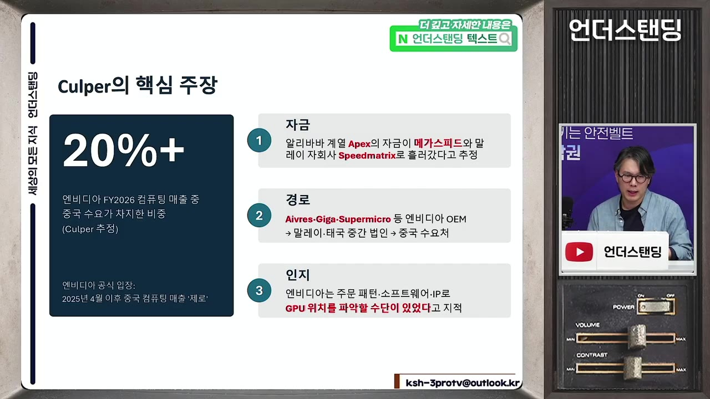
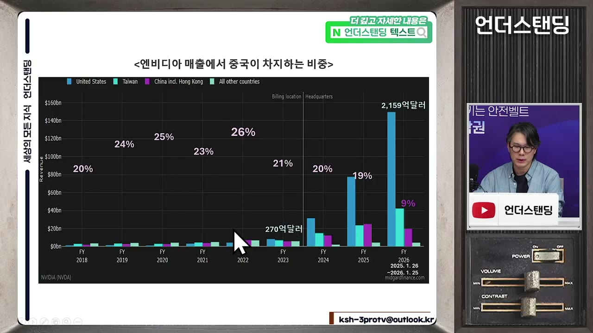
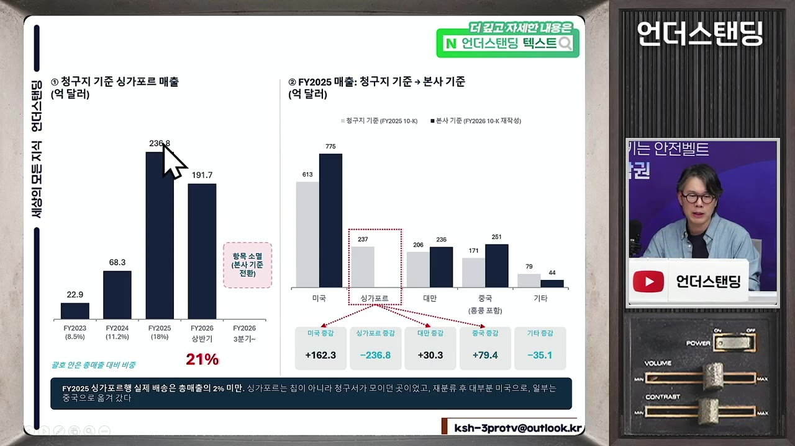
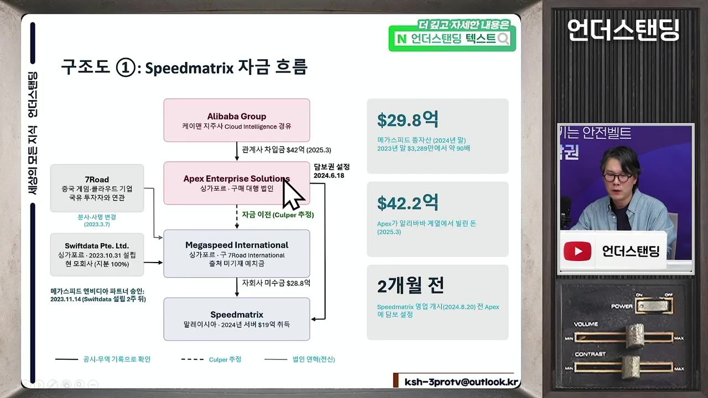

싱가포르로 간 엔비디아 GPU 5만장 어디로 사라졌나, 알리바바 4조 자금과 메가스피드 우회 밀수 의혹(언더스탠딩 김상훈 기자)
▶ 원본 영상 보기한눈에 보기
- 공매도 기관 컬퍼 리서치는 엔비디아의 중국 관련 매출이 공식 수치(약 9%)보다 훨씬 큰 20% 안팎이며, 싱가포르 메가스피드가 중국행 GPU 밀수의 통로였다고 주장한다.
- 알리바바 계열 자금(약 42억 달러 차입, 그중 약 29억 달러가 GPU 구매에 사용)이 아펙스 → 메가스피드 → 말레이시아 자회사 스피드 매트릭스로 흘러갔다는 것이 핵심 의혹이다.
- 블룸버그에 따르면 싱가포르로 들어간 GPU 약 13만 6천 장 중 약 5만 장의 행방이 불분명하다.
- 엔비디아가 고객 심사·라이선스 소프트웨어·지연 시간·업데이트 IP 기록으로 이를 알 수 있었다는 것이 컬퍼의 논리이며, 확정된 사실은 아니다.
- 김상훈 기자는 미국 AI 산업 파장을 고려해 형사처벌보다 과징금(거래액 최대 2배)으로 마무리될 가능성이 크다고 본다.
이런 분께 도움이 됩니다
- 엔비디아 투자자 중 중국 매출·수출 통제 리스크를 점검하려는 분.
- 이번 스캔들의 본질(불륜이 아니라 수출 통제 위반 여부)과 예상 시나리오를 빠르게 파악하고 싶은 분.
핵심 내용
사건의 본질과 세 가지 핵심 질문
- 불륜 스캔들에 관심이 쏠리지만 본질은 수출 통제 위반이다. 핵심 질문은 세 가지다. (2:17)
- 중국이 메가스피드를 통해 미국의 감시망을 뚫고 GPU를 밀수했는가
- 앨리스 황(메가스피드 실질 지배자로 추정)이 간첩인가
- 젠슨 황이 이를 정말 몰랐는가
- 몰랐다면 큰 문제가 아닐 수 있지만, 이상 징후가 충분한데도 모른 척했다면 처벌 대상이 된다.

컬퍼 리서치 보고서와 한계
- 2026년 5월 공매도 기관 컬퍼 리서치가 보고서를 냈다. 2026 회계연도 엔비디아 GPU 매출의 20% 이상이 중국이라는 주장이다. (5:00)
- 컬퍼는 엔비디아 공매도 포지션을 잡고 있어 편향 가능성이 있다. 정황 증거는 많지만 확정 사실은 아니다. (6:32)
💡 의혹의 근거는 대부분 공매도 측 주장과 언론 보도이며, 수사 결과 전에는 단정할 수 없다.
매출 통계의 변화
- 미국은 2022년부터 고사양 AI 칩의 중국 판매를 막았고, 2025년 4월 저사양 중국용 칩까지 통제를 강화했다. 트럼프 대통령이 지난해 12월 H200을 조건부로 일부 풀었다. (6:55)
- 엔비디아 중국 매출 비중은 약 20%(2022년에는 26% 정도)에서 9%로 떨어졌다. (7:41)
- 같은 시기 싱가포르 매출이 급증해 상반기에만 전년의 약 90% 수준이 발생했고, 전체 매출의 21%에 달했다. (10:21)
- 2025년 7월 엔비디아는 매출 인식 기준을 '청구지'에서 '본사 소재지'로 바꿨다. 이후 싱가포르 매출은 미국·대만·중국 등으로 흩어져 사라졌다.
- 엔비디아는 "지리적 분포를 더 잘 보여주기 때문"이라고 한 줄만 설명했다.
- 컬퍼는 싱가포르가 밀수의 중간 기착지임을 감추려는 조치라고 의심한다.
- 진행자 지적: 미국 등 전 세계 매출이 함께 늘었기 때문에 증가 자체가 근거는 아니며, 도시국가 싱가포르의 규모가 의심 포인트다.


메가스피드의 구조와 자금 흐름
- 메가스피드는 2023년 3월 중국 세븐로드에서 분사한 회사로, 2023년 말 자산이 약 3,289만 달러(약 400억 원)에 불과했다. (13:47)
- 모회사 스위프트 데이터가 지분 100%를 보유하고, 앨리스 황이 그 실질 주인으로 추정된다. 싱가포르 당국도 실질 지배자로 지목해 수사했다. (14:11)
- 모회사 설립 약 보름 뒤인 2023년 11월 14일, 엔비디아가 메가스피드를 동남아 단독 파트너로 선정했다. 자산 규모를 보면 이례적이라는 지적이다. (15:21)
- 이후 말레이시아 자회사 스피드 매트릭스에 약 29억 달러(약 4조 원)가 들어갔다.
- 컬퍼 추적 결과 아펙스 엔터프라이즈 솔루션이 2024년 6월 스피드 매트릭스 GPU에 담보권을 설정했고, 아펙스를 거슬러 올라가면 알리바바가 나온다.
- 알리바바가 아펙스에 42억 달러를 대여했고 그중 약 29억 달러가 GPU 구매에 쓰였다는 주장이다.
- 자금 출처가 알리바바라면 회계상 GPU의 실소유자는 알리바바이므로, 수출 통제 위반으로 볼 수 있다는 것이 컬퍼의 논리다.
- 다만 법적으로 알리바바가 산 것은 아니라는 반론도 가능하다.
🔁 컬퍼 리서치가 주장하는 자금·GPU 흐름
- 알리바바 대여
- 아펙스→메가스피드
- 자회사로 전달
- GPU 구매
- 일부 중국행
- 1알리바바 대여
알리바바가 아펙스에 약 42억 달러를 빌려줌
- 2아펙스→메가스피드
아펙스가 메가스피드에 자금 공급
- 3자회사로 전달
메가스피드가 스피드 매트릭스에 약 29억 달러 투입
- 4GPU 구매
스피드 매트릭스가 엔비디아 GPU 구매, 말레이시아 데이터센터 구축
- 5일부 중국행
일부 GPU가 중국(알리바바)으로 넘어갔다는 의혹

사라진 GPU 5만 장
- 2025년 12월 블룸버그가 메가스피드를 엔비디아 최대 동남아 파트너이자 밀수 의혹의 중심으로 보도했다. (20:35)
- 싱가포르 세관 기록상 2025년 11월까지 약 46억 달러, GPU 약 13만 6천 장이 들어갔다. 며칠 전 후속 보도에서 약 8만 장은 데이터센터에서 확인되지만 약 5만 장은 행방불명이라고 밝혔다. (21:23, 22:09)
- 데이터센터만 지었다면 수출 통제 문제가 없지만, 5만 장이 알리바바 등 중국으로 갔다면 위반이다.
- 진행자 설명: 직접 중국에 팔았을 수도, 브로커를 통했을 수도 있어 앨리스 황이 알았는지는 수사가 필요하다. 다만 이 사업 모델을 만든 사람은 앨리스 황이다.
에이브레이스 시스템즈: 제재 회피 고리
- 스피드 매트릭스는 OEM 서버 업체 에이브레이스 시스템즈에서 약 40억 달러어치를 샀다. (24:24)
- 이 회사는 미국 수출 금지 리스트에 오른 중국 인스퍼 일렉트로닉스의 100% 자회사이지만 리스트에는 없다. (23:40)
- 원래 이름이 인스퍼 시스템즈였는데 이름을 바꿨다. (26:19)
- 미국은 제재 대상이 50% 이상 지분을 가진 자회사를 자동으로 리스트에 포함하는 규칙을 만들었으나 지난해 11월 적용을 유예했다. 덕분에 판매가 계속됐다.
💡 모회사가 제재 대상인 업체에 팔았다는 사실 자체가 "중국행을 알고 팔았나"라는 의심의 또 다른 고리다.
슈퍼마이크로 기소 사례
- 미국 법무부는 지난 3월 슈퍼마이크로(창업자 중 국적 대만) 관련자를 기소했다. (27:50)
- 수법: 대만 물류센터에서 진짜 GPU 서버를 더미 서버와 바꿔치기해 진짜는 중국으로 보냈다. 태국 클라우드 업체를 통해 약 25억 달러 규모였다. (28:12)
- 슈퍼마이크로는 엔비디아를 속였을 가능성이 있지만, 메가스피드는 실질 지배자가 젠슨 황과 가깝다고 알려져 사정이 다르다는 것이 컬퍼 쪽 논리다. (29:20)
엔비디아가 알 수 있었다는 근거 4가지
- 컬퍼 리서치가 제시하는 네 가지다. (31:12)
| 수단 | 내용 | 한계 |
|---|---|---|
| 사전 판매 심사 | 규모에 맞지 않는 주문, 전력 확보량 대비 과다 주문, 보증서 불필요 요구, 결제자와 수령자 불일치 시 최종 구매자 확인 | 슈퍼마이크로식 더미 서버 위장은 못 거름 |
| 라이선스 소프트웨어 | GPU가 엔비디아 중앙 서버와 주기적으로 교신하며 판매처에 있는지 확인 | 외부 네트워크가 차단된 학습용 데이터센터는 표시가 안 뜰 수 있음 |
| 지연 시간(레이턴시) | 응답 시간으로 위치 추정. 싱가포르는 1~2ms, 중국이면 훨씬 길어짐 | - |
| 펌웨어 업데이트 IP | 업데이트 접속 IP로 중국 접속 확인 | - |
- 주장의 요지: 확인 수단과 신호가 있었는데 확인하지 않았다면 의도적 묵인이다. 수출 통제에서는 의심 신호가 있는데 충분히 점검하지 않으면 '알았다'고 판단한다. (37:16, 38:00)
정황 증거와 수사 상황
- 컬퍼 보고서에는 메가스피드·엔비디아 전직원의 익명 증언이 있다. 젠슨 황이 메가스피드를 방문하면 그날이나 그 주에 알리바바 사람들이 온다는 증언이다. 직원들은 따로 말을 맞추고 비즈니스 하는 척한다고 봤다. (30:05)
- 블룸버그: 앨리스 황이 싱가포르 수사를 받던 때 엔비디아 법무 담당이 미 상무부 수출통제 담당 차관보에게 전화를 걸었다. 통화 내용은 알려지지 않았다. (38:45)
- 2025년 말 BIS(상무부 산업안보국)와 법무부가 조사했으나 법무부 요청으로 수사가 중단됐다는 보도도 있다. (39:33)
- 이번에 상무부·법무부가 메가스피드의 범죄 행위가 드러나면 모든 수단을 동원하겠다는 공동 성명을 냈다.
예상되는 처벌과 파장
- 수출 통제 위반 시 건당 37만 달러 또는 거래액의 2배 중 큰 금액의 과징금이 가능하다. 10조 원어치라면 약 20조 원이다. (3:03, 41:49)
- 거래 금지 명령은 전 세계 AI 산업 충격 때문에 쓰지 않을 가능성이 크다고 본다.
- 고의가 입증되면 경영진 형사처벌, 개인 최대 20년형이 가능하다. 형사처벌을 받으면 젠슨 황의 CEO 복귀가 사실상 막힌다. (42:12)
- 엔비디아는 "통제 대상 칩의 중국 매출은 0, 메가스피드의 중국 주주는 없다"고 공시·주장해 왔다. 위반이 확정되면 공시 위반, 증권 사기, 집단소송으로 번질 수 있다.
- 중국 매출 약 20%가 사라지면 매출 타격이 있고, 동남아 데이터센터에 대한 중국 기업의 원격 접속 차단 여론도 있다.
정치적 배경 (진행자 의견·음모론 수준)
- 트럼프 행정부가 중국과의 협상 카드로 밀수를 알고도 눈감았을 가능성이 있다는 추측이 나온다. 같은 맥락에서 중간선거 패배 후 대중 강경파(마크 루비오 등)가 힘을 얻어 스캔들이 터졌다는 시각도 있다. 이는 완전한 음모론이라고 스스로 밝혔다. (46:45, 47:31)
- 50% 지분 규칙을 유예한 것은 정치적 판단이라는 평가다. (48:40)
💡 이 정치적 해석은 근거 없는 추측이므로 투자 판단에 쓰기 어렵다.
김상훈 기자의 전망
기억할 숫자·인용
- 엔비디아 중국 매출 비중: 약 20%(2022년 26%) → 공식 9%, 컬퍼 추정은 20% 이상
- 싱가포르 매출: 전체의 21%(2026 회계연도 상반기)
- 메가스피드 초기 자산 약 3,289만 달러(약 400억 원) → 스피드 매트릭스에 29억 달러(약 4조 원) 투입
- 알리바바 → 아펙스 대여 42억 달러, 그중 29억 달러가 GPU 구매에 사용
- 싱가포르 반입 GPU 약 13만 6천 장(46억 달러) 중 약 5만 장 행방불명
- 에이브레이스 시스템즈 거래 약 40억 달러, 슈퍼마이크로 연루 태국 업체 약 25억 달러
- 과징금: 건당 37만 달러 또는 거래액 2배 중 큰 금액, 형사처벌 최대 20년형
- 직원 증언: "젠슨 황이 메가스피드를 방문하면 그날 혹은 그 주에 알리바바 사람들이 온다"
생각해볼 점
- 컬퍼 리서치는 공매도 포지션 보유자이며, 이 영상의 근거도 대부분 정황 증거라 확정 사실로 볼 수 없다. (영상 내용)
- 매출 인식 기준 변경은 의심스러워 보이지만 엔비디아가 설명한 이유도 있어, 변경 자체가 의도적 은폐의 증거는 아니다. (내 의견)
- 라이선스 확인 등 4가지 수단은 컬퍼의 주장이며, 엔비디아가 실제로 이런 시스템으로 위치를 추적할 수 있는지는 영상만으로 검증되지 않는다. (자막상 불분명)
- 투자 관점에서는 수사 결과, 과징금 규모, 중국 매출 감소 영향을 따로 구분해 점검하는 것이 좋다. 영상은 투자 권유가 아닌 취재 내용이다.
바로 해볼 일
- 엔비디아 최근 공시에서 지역별 매출 기준(청구지 → 본사 기준) 변경 문구를 직접 확인한다.
- 상무부·법무부 공동 성명과 블룸버그 후속 보도를 확인해 수사 진행 상황을 점검한다.
- 보유 비중이 있다면 중국 매출 20% 감소 시나리오와 과징금 시나리오를 따로 계산해 본다.